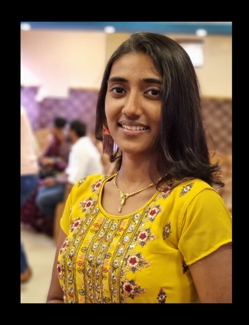

Elisha Dhaane

Summary
Highly motivated and detail-oriented student with a strong academic background in computer science.
Proven ability to balance multiple responsibilities and excel in fast-paced environments.
Possesses strong analytical, problem-solving, and communication skills. Eager to apply classroom
knowledge to real-world challenges and contribute to a dynamic team. Seeking internship or
entry-level opportunities to gain hands-on experience and advance my career in web development.
Education
Btech Computer Science cyber security
SRM University, Chennai, Tamil Nadu
Expected Graduation: June 2026
Relevant Coursework: Web Development, Data Structures, Algorithms, Database Management,
Software Engineering
GPA: 9.1/10.0
High School Diploma
Union Christian MHSS School, Chennai, Tamil Nadu
Graduated: May 2022
Honors: National Honor Society, Math Club President, Science Fair Winner
Work Experience
Web Development Intern
Tech Innovators, Chennai, Tamil Nadu
June 2023 – August 2023
- Developed and maintained responsive websites using HTML, CSS, JavaScript, and React.
- Collaborated with the design team to implement user-friendly interfaces and improve website functionality.
- Assisted in debugging and testing web applications to ensure optimal performance across different browsers.
- Contributed to the creation of a company-wide intranet portal, enhancing internal communication and resource sharing.
Freelance Web Developer
Self-Employed, Chennai, Tamil Nadu
January 2022 – Present
- Designed and built custom websites for small businesses and individuals, ensuring mobile compatibility and SEO optimization.
- Utilized modern web technologies such as Bootstrap, jQuery, and Node.js to create dynamic and interactive web pages.
- Managed web hosting, domain registration, and site maintenance for clients.
- Provided training and support to clients on how to update and maintain their websites.
Computer Science Tutor
XYZ University, City, State
September 2021 – May 2023
- Assisted students with coursework in web development, programming, and computer science fundamentals.
- Developed tutorial materials and conducted one-on-one and group tutoring sessions.
- Helped students troubleshoot coding issues and improve their problem-solving skills.
Skills
- HTML: Proficient in creating structured and semantically meaningful web pages.
- CSS: Skilled in styling web pages with CSS, including layout, colors, and fonts.
- JavaScript: Familiar with basic JavaScript concepts and DOM manipulation.
- Responsive Design: Able to develop websites that adapt gracefully to various screen sizes using CSS media queries.
- Version Control: Basic understanding of Git for tracking changes and collaborating on projects.
- Soft Skills: Strong problem-solving abilities, excellent communication, teamwork, time management
Certification
- Dean's List Recipient
XYZ University
- Academic Excellence Award
ABC High School
- Top Performer in Coding Competition
Regional Event >
Others
Contact me
Hobbies